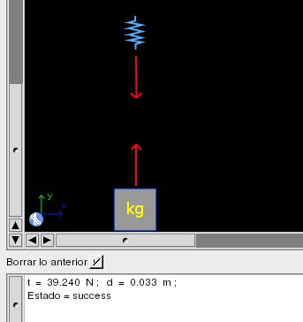
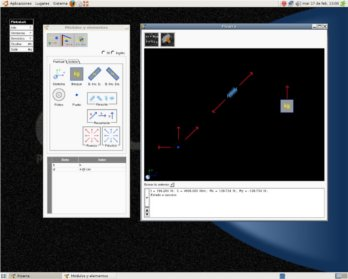
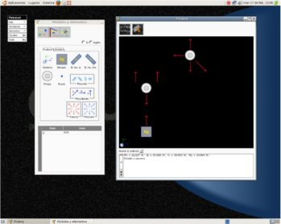
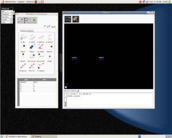
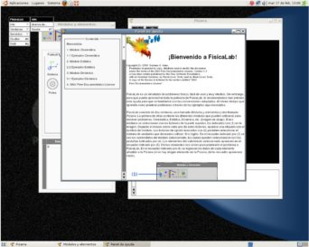

FísicaLab
El software libre para la física
FísicaLabEl software libre para la física |
| Noticias | Próxima versión | Bugs en la versión actual |
FísicaLab es una aplicación educativa
para la resolución de problemas físicos. Esta hecha con GNUstep y hace
uso de las librerías GSL (GNU Scientific Library). Los problemas se
plantean agregando elementos de la Paleta a la Pizarra, e ingresando
los datos de cada uno de dichos elementos. Los elementos son objetos
como Bloques, Poleas, Moviles, Fuerzas, etc, lo que hace fácil e
intiutivo el plantear problemas. Implementa tanto el sistema de
unidades SI como el Inglés, así como la notación científica. Además
incluye una gran cantidad de factores de conversión. La versión actual,
la 0.1, puede resolver los siguientes tipos de problemas:
|
 |
|  | Los problemas relativos a estática o dinámica, se plantean construyendo los diagramas de cuerpo libre a partir de los elementos de la paleta. Aunque es fácil e intuitivo el uso de FísicaLab, recomendamos leer la ayuda antes de plantear cualquier problema. Esto con el fin de familiarizarse con las convenciones adoptadas y poder asi aprovechar al maximo las facilidades que ofrece FísicaLab. La ayuda se accede a través del menú, en Info -> Ayuda. |
Para compilar la aplicación se necesitan las siguientes librerías (y sus headers):
Clic en la imagen para ampliar:
|  |  |
|  |  |
FísicaLab es multiplataforma, por lo que es posible instalarlo en sistemas GNU/Linux, BSD, Mac OS X y Windows.
El paquete tar puede descargarse desde el siguiente enlace:
Las instrucciónes de instalación estan en el archivo INSTALACION.
FísicaLab esta disponible desde los repositorios oficiales de las distribuciones openSuse y Gentoo.
El instalador para Windows y las instrucciones de instalación pueden obtenerse aqui.
FísicaLab es software libre, publicada bajo los términos de la licencia GPLv3.
Puedes obtener ayuda, realizar comentarios, o reportar problemas en la lista de discusión general de FísicaLab. Para suscribirte a dicha lista pincha aqui, o puedes ver si tu pregunta ya ha sido contestada consultando el archivo aqui.
Para reportar un bug, por favor incluye la mayor cantidad de informacion posible: información de tu maquina, tu sistema operativo, versión de tu sistema operativo, versión de GSL que usas, versión de GNUstep, y una descripción del problema.
 |
|
 |